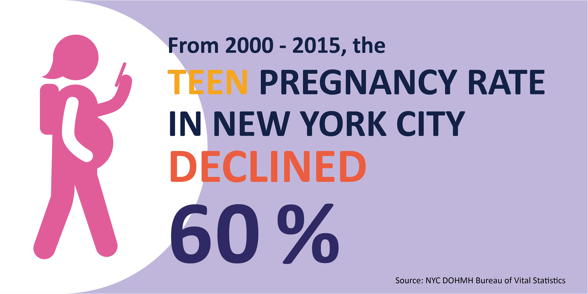
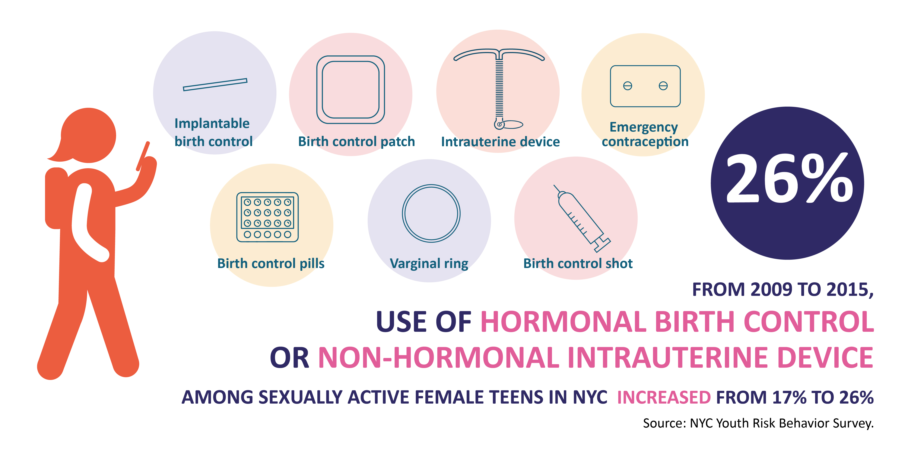

Trends in Pregnancy, Sexual Behavior, use of contraception
From 2000 to 2015, the pregnancy rate among New York City (NYC) residents ages 15 to 19 declined 60% and the number of teen pregnancies dropped by more than 16,000. Rates declined notably among Black, Latino, and Asian/Pacific Islander teens, and among teens in neighborhoods where the Health Department has established Neighborhood Health Action Centers.
During this same period, therewere declines in sexual activity and greater use of hormonal or longactingreversible contraception among NYC public high school students.Declines in NYC teen pregnancy rates are consistent with declines nationally. From 2000 to 2010 (the latest year of US data), the US teen pregnancy rate declined 31%;1 the NYC decline was 29% during the same period.

10-14
15-17
18-19
The teen pregnancy rate among NYC resident declined 60% from 2000 to 2015, from 101.2 to 40.6 per 1,000 females 15 to 19 years old. Rates decreased 67% among 15- to 17-year-olds and 56% among18- to 19-year-olds.Rates declined in all five NYC boroughs, with the greatest decline
seen in Manhattan (68%), particularly among teens ages 15 to 17(74% decline).
From 2009 to 2015, among sexually active female teens in NYC public high schools, use of hormonal birth control (HBC) or longactin greversible contraception (LARC)‡ increased from 17% to 26%.
Dual protection (condom with HBC or LARC) provides maximum protection from both sexually transmitted infections and unintended pregnancies. Among sexually active female and male teens in NYC public high schools, 10% used dual protection in 2015.

Births rate Natality by Mothers Age 10-24 years old and Mothers Borough of Residence in New York City in 2015
Between 2000 and 2015, the pregnancy rate among NYC teens declined in the three Health Action Center^^ neighborhoods:
71% in East and Central Harlem (from 151.1 to 43.7 per 1,000 females 15 to 19),
63% in North and Central Brooklyn (from 149.4 to 55.3 per 1,000 females 15 to 19), and
61% in the South Bronx (from 170.5 to 67.3 per 1,000 females 15 to 19).
In non-Action Center areas, the rate declined 61% overall (from 81.7 to 31.5 per 1,000 females 15 to 19).